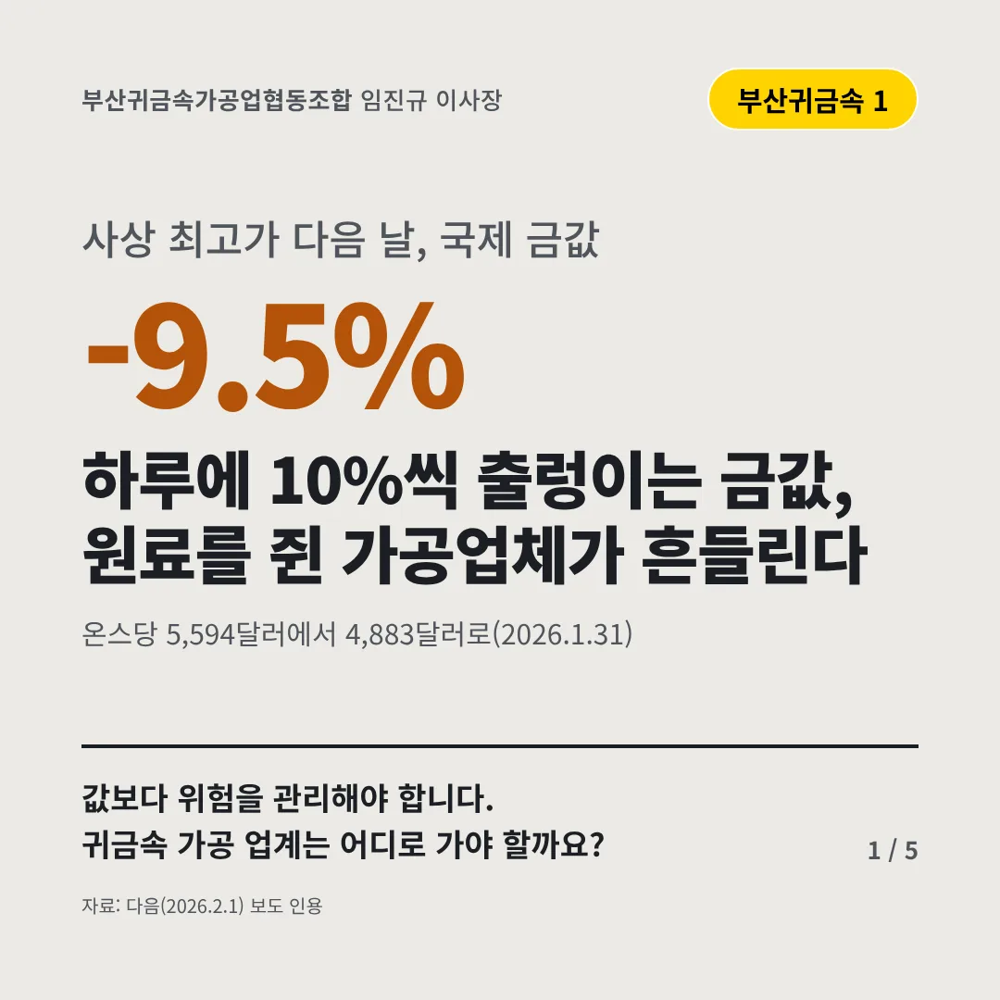
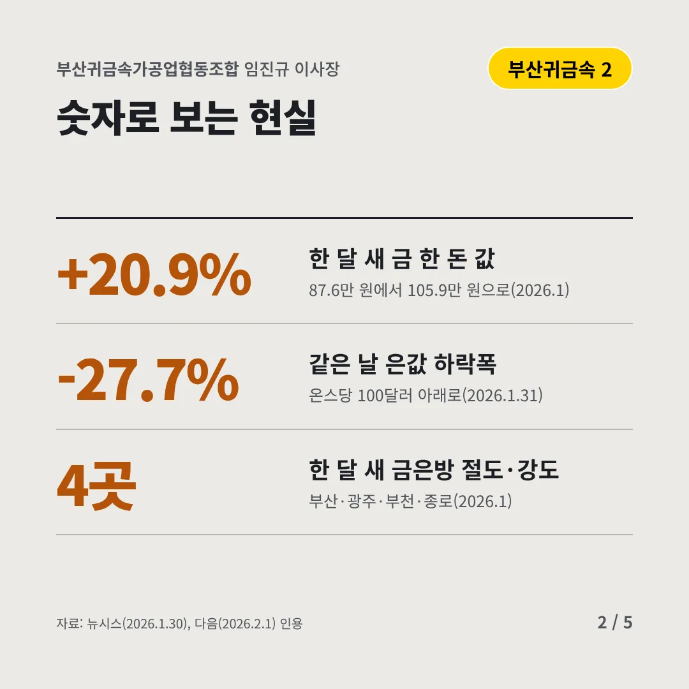
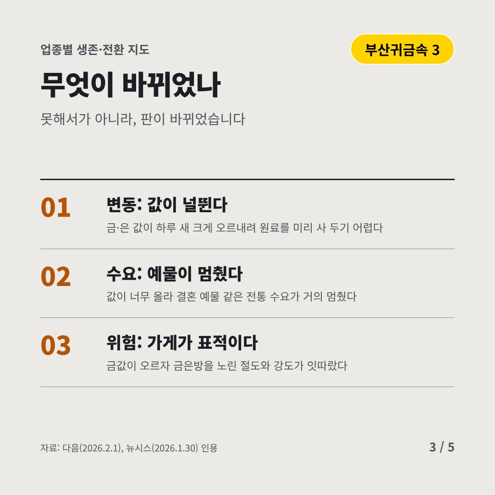
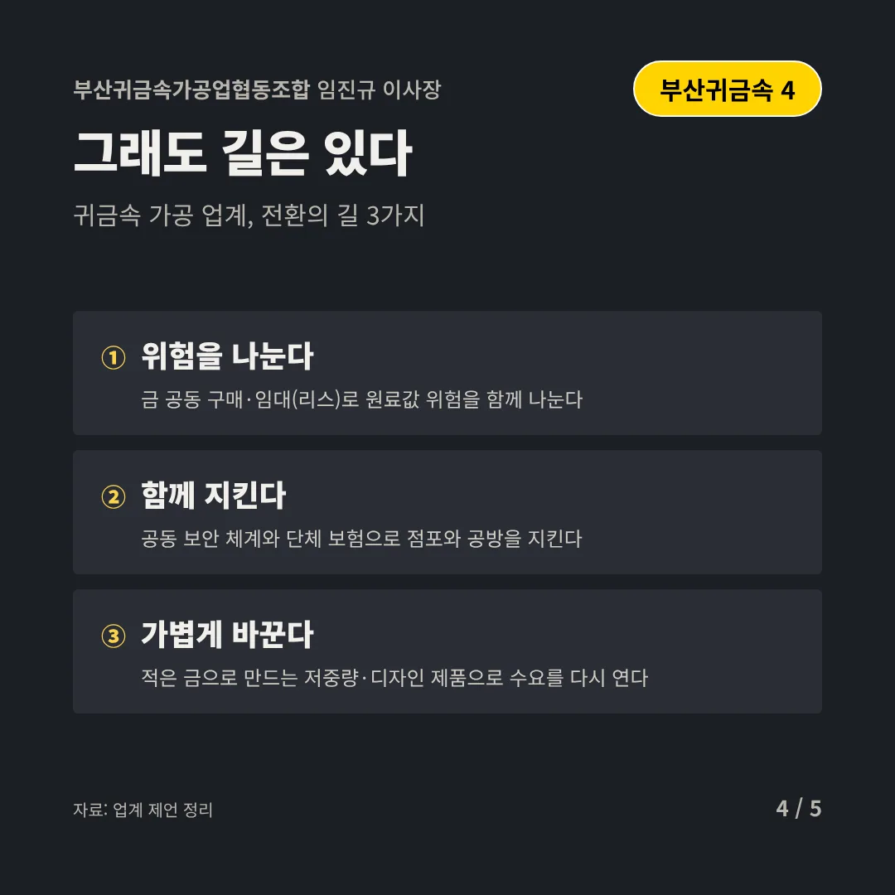
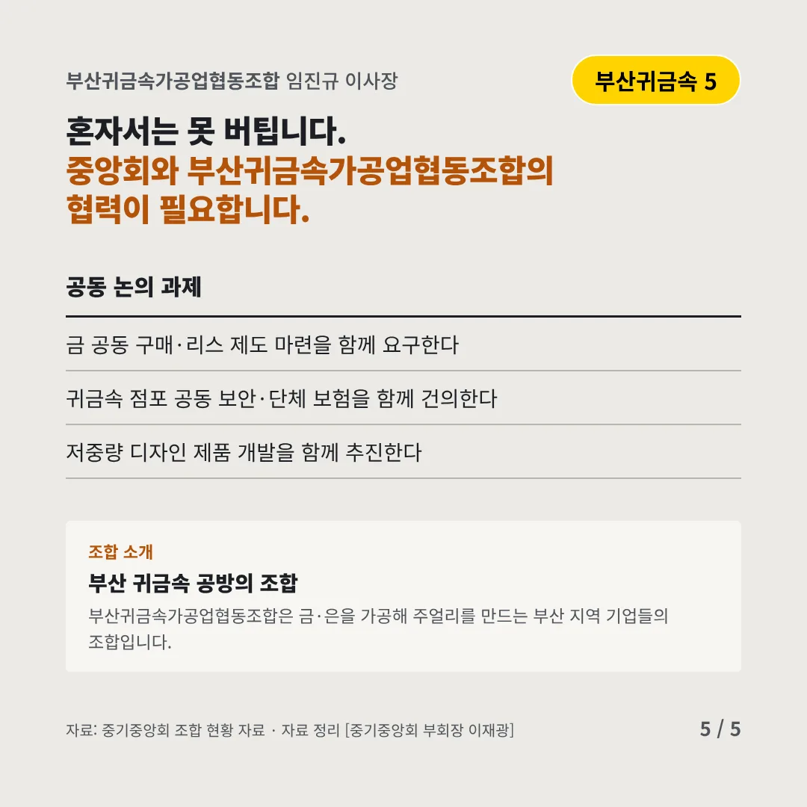
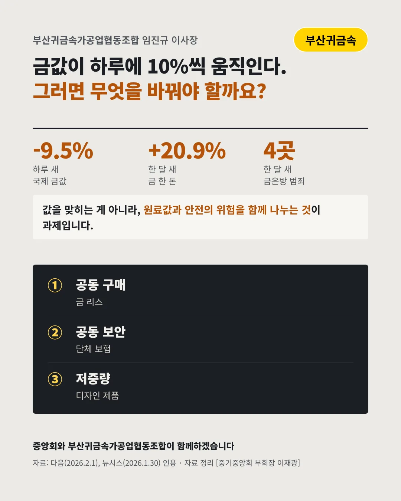

부산귀금속가공업협동조합임진규 이사장
하루에 10%씩 출렁이는 금값, 원료를 쥔 가공업체가 흔들린다
-9.5% 사상 최고가 다음 날, 국제 금값






값보다 위험을 관리해야 합니다. 귀금속 가공 업계는 어디로 가야 할까요?
숫자로 보는 현실
- +20.9%한 달 새 금 한 돈 값87.6만 원에서 105.9만 원으로(2026.1)
- -27.7%같은 날 은값 하락폭온스당 100달러 아래로(2026.1.31)
- 4곳한 달 새 금은방 절도·강도부산·광주·부천·종로(2026.1)
무엇이 바뀌었나
- 변동: 값이 널뛴다금·은 값이 하루 새 크게 오르내려 원료를 미리 사 두기 어렵다
- 수요: 예물이 멈췄다값이 너무 올라 결혼 예물 같은 전통 수요가 거의 멈췄다
- 위험: 가게가 표적이다금값이 오르자 금은방을 노린 절도와 강도가 잇따랐다
그래도 길은 있다
- 위험을 나눈다금 공동 구매·임대(리스)로 원료값 위험을 함께 나눈다
- 함께 지킨다공동 보안 체계와 단체 보험으로 점포와 공방을 지킨다
- 가볍게 바꾼다적은 금으로 만드는 저중량·디자인 제품으로 수요를 다시 연다
한 장 요약

조합 소개
부산귀금속가공업협동조합은 금·은을 가공해 주얼리를 만드는 부산 지역 기업들의 조합입니다.
자료: 다음(2026.2.1), 뉴시스(2026.1.30)